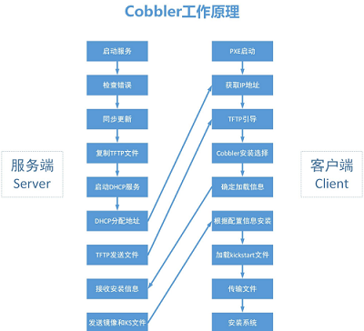
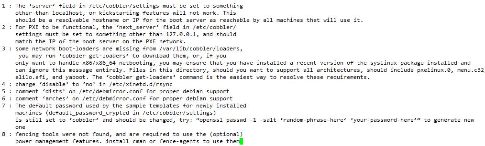
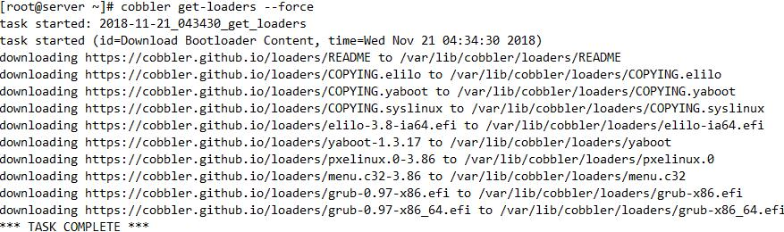
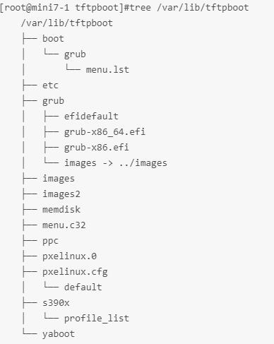
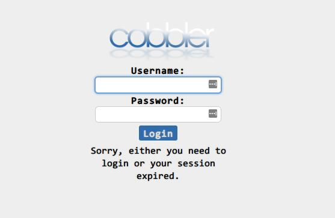

PXE不支持UEFI
更多使用Cobbler来实现自动化部署
Cobbler
快速网络安装linux操作系统的服务，支持众多的Linux发行版：RedHat、Fedora、CentOS、Debian、Ubuntu和SuSE，也可以支持网络安装windows
PXE的二次封装，将多种安装参数封装到一个菜单
Python编写
提供了CLI和Web的管理形式
但是实现PXE的原有的httpd，DHCP，tftp服务还是需要提前安装的
cobbler可以同时支持BIOS和UEFI两种：基于PXE技术为基础的整合
BIOS+MBR：分区最多支持2T的
UEFI+GPT：分区可以支持大于2T的分区
在之前的工作中，需要建立大于2T的分区时，PXE安装就不合适了
Cobbler工作原理

Server端：
第一步，启动Cobbler服务
第二步，进行Cobbler错误检查，执行cobbler check命令
第三步，进行配置同步，执行cobbler sync命令
第四步，复制相关启动文件文件到TFTP目录中
第五步，启动DHCP服务，提供地址分配
第六步，DHCP服务分配IP地址
第七步，TFTP传输启动文件
第八步，Server端接收安装信息
第九步，Server端发送ISO镜像与Kickstart文件
Client端：
第一步，客户端以PXE模式启动
第二步，客户端获取IP地址
第三步，通过TFTP服务器获取启动文件
第四步，进入Cobbler安装选择界面
第五步，客户端确定加载信息
第六步，根据配置信息准备安装系统
第七步，加载Kickstart文件
第八步，传输系统安装的其它文件
第九步，进行安装系统
基础环境准备
安装包
cobbler 基于EPEL源
cobbler 服务集成
前面说过因为是基于PXE的,安装cobbler因为有依赖性，会自动安装下面的服务
PXE
DHCP
rsync
Httpd
DNS
Kickstart
syslinux
tftp-server
IPMI 电源管理
启动cobbler:依赖于httpd，要想启动cobbler,必须先启动httpd
systemctl start httpd tftp dhcp
systemctl start cobblerd
然后再检查cobbler环境
cobbler check
cobbler的相关配置文件
安装：yum install cobbler dhcp
配置文件目录 /etc/cobbler
/etc/cobbler/settings : cobbler 主配置文件(下文会对该文件修改4行)
/etc/cobbler/iso/: iso模板配置文件
/etc/cobbler/pxe: pxe模板文件
/etc/cobbler/power: 电源配置文件
/etc/cobbler/user.conf: web服务授权配置文件
/etc/cobbler/users.digest: web访问的用户名密码配置文件
/etc/cobbler/dhcp.template : dhcp服务器的的配置末班
/etc/cobbler/dnsmasq.template : dns服务器的配置模板
/etc/cobbler/tftpd.template : tftp服务的配置模板
/etc/cobbler/modules.conf : 模块的配置文件
数据目录
/var/lib/cobbler/config/: 用于存放distros，system，profiles 等信息配置文件
/var/lib/cobbler/triggers/: 用于存放用户定义的cobbler命令
/var/lib/cobbler/kickstart/: 默认存放kickstart文件
/var/lib/cobbler/loaders/: 存放各种引导程序
镜像目录
/var/www/cobbler/ks_mirror/: 导入的发行版系统的所有数据
/var/www/cobbler/images/ : 导入发行版的kernel和initrd镜像用于远程网络启动
/var/www/cobbler/repo_mirror/: yum 仓库存储目录
日志目录
/var/log/cobbler/installing: 客户端安装日志
/var/log/cobbler/cobbler.log : cobbler日志
/etc/cobbler/settings中重要的参数设置
default_password_crypted: "$1$gEc7ilpP$pg5iSOj/mlxTxEslhRvyp/"
//修改成用openssl rand passwd -1 生成的口令
server: 192.168.34.17 //修改成本地网卡的监听地址server
next_server: 192.168.34.17 //修改成tftp服务器的监听地址server
manage_dhcp: 1
manage_tftpd：1
pxe_just_once：1 //下次重启不在重装系统，不会覆盖系统
Cobbler命令介绍
cobbler check 检查当前设置是否有问题
cobbler list 列出所有的cobbler元素
cobbler report 列出元素的详细信息
cobbler sync 同步配置到数据目录，更改配置最好都要执行下
cobbler reposync 同步yum 仓库
cobbler distro 查看导入的发行版系统信息
cobbler distro remove –name= 可用于删除菜单选项
cobbler system 查看添加的系统信息
cobbler profile 查看配置信息
cobbler profile add 可用于添加菜单选项
Remove 删除菜单选项，删除关联文件
Rename 改名字
安装配置
配置阿里epel源 wget -O /etc/yum.repos.d/epel.repo http://mirrors.aliyun.com/repo/epel-7.repo
1.yum install cobbler cobbler-web dhcp -y
2.确认httpd、tftp-sever已经启动且已经开机自启systemctl start httpd tftpd
3.启动cobbler
systemctl start cobblerd.service
4. 初次cobbler check //检查cobbler运行环境

执行Cobbler check报错解决方式
1).修改/etc/cobbler/settings文件中的server参数的值为提供cobbler服务的主机相
应的IP地址或主机名：384行，然后重新启动cobbler
server: 192.168.34.107
2).修改/etc/cobbler/settings文件中的next_server参数的值为提供PXE服务的主机
相应的IP地址:272行，指定的tftp的服务器地址
next_server: 192.168.34.107
3).执行cobbler get-loaders和cobbler sync；
联网：执行"cobbler get-loaders"命令即可；
cobbler会自动通过互联网把最小化的系统启动文件下载下来放到
/var/lib/cobbler/loaders/下，再通过"cobbler sync"命令同步到/var/lib/tftpboot/下
不联网：cp /usr/share/syslinux/{pxelinux.0,menu.c32} /var/lib/tftpboot

4).cobbler认为是在centos6上，tftp服务是依赖于xinetd的，提示启动xinetd,在
这里，由于是在cnetos7上安装的，这项可以忽略
5).执行“chkconfig rsync on”命令即可
4,5,6项如果是在centos7上安装的cobbler是不需要修改也可以启动的
7).第7项是说安装的操作系统密码cobbler事先已经帮忙设置好了，但是不安全，需要自己
去修改一个自定义的密码(通过openssl passwd -1)生成：101行
default_password_crypted：修改成自己设置的密码
备注：
在这个提示里，还有一项建议修改，之前用PXE的时候，搭建的DHCP服务，
dhcpd.conf文件时通过模板生成的，但是在cobbler中，可以通过colbber来生成，
但是需要改/etc/cobbler/settings一项配置：242行
manage_dhcp: 0 改成 manage_dhcp: 1
再通过cobbler自带的dhcp模板：/etc/cobbler/dhcp.template，生成dhcpd.conf
只需要把这个模板改一下就行了，而不用想PXE那样通过模板生成dhcpd.conf文件
把dhcp.template里的网段地址改一下
subnet 192.168.34.0 netmask 255.255.255.0 {
option subnet-mask 255.255.255.0;
range dynamic-bootp 192.168.34.20 192.168.34.100;
再通过cobbler sync重新生成/etc/dhcp/dhcpd.conf,并且会开启DHCP服务
5. 再次cobbler check检查cobbler运行环境
6. cobbler sync，同步配置到数据目录
上面的报错全部解决之后，且httpd,tftp，dhcp,cobbler都启动之后，实际上就已经配置接近完成
7./var/lib/tftpboot的目录结构:上面的第三步完成后就生成下面的所有文件了

8.这里用import选项将6和7的光盘导入cobbler的主机上
mount /dev/sr0 /mnt/ --->挂载centos7光盘
cobbler import --path=/mnt/ --name=Centos-7.5-x86_64 --arch=x86_64
cp *.ks /var/lib/cobbler/kickstarts
vim /var/lib/cobbler/kickstarts/ks.cfg
url --url=$tree
9.cobbler profile list

10.将自定义的应答文件和安装版本进行绑定
cobbler profile add --name=centos-7.5-x86_64_mini --distro=Centos-7.5-x86_64 --kickstart=/var/lib/cobbler/kickstarts/ks7-mini.cfg
Cobbler安装CentOS 7网卡命名修改
准备上线CentOS 7.x，在Cobbler上导入后，发现网卡名称变成了eno1这样的，好吧，那就添加两个内核参数上去，让它变回eth0.
cobbler profile edit --name=CentOS-7.5-x86_64 --kopts='net.ifnames=0 biosdevname=0'
cobbler的WEB界面
提供cobbler的基于web管理界面，epel源
yum install cobbler-web
systemctl reload httpd
访问浏览器https://IP/cobbler_web

1.给cobbler加管理员：
htdigest -c /etc/cobbler/users.digest Cobbler cobbleradmin
Cobbleradmin管理员登录名字
cat /etc/cobbler/users.digest 看到账户已经覆盖原有内容
2.修改cobbler的验证方式
vim /etc/cobbler/modules.conf
[authentication]
module = authn_configfile
3.创建cobbler账号
useradd -s /sbin/nologin cobbleradm
vim /etc/cobbler/users.conf（ authn_pam模块的配置文件，验证方法设置）
[admins]
admin = “cobbleradm” 将useradd创建的用户添加
cobbler = “”
Cobbler中自定义应答文件
1.在cobbler中，应答文件是放在/var/lib/cobbler/kickstarts/中
2.把之前制作的ks7.cfg拷贝到此目录，但是拷贝完，但cobbler是无法识别这些应答文件是对应的那个发行版本的，所以要绑定
3.将自定义的应答文件和安装版本进行绑定
4.这两个应答文件有一项需要修改
即url --url=这一项，
要改成cobbler的yum源路径，$tree
或者改成具体的地址：即光盘拷贝到cobbler的具体路径
将KS和OS关联，生成启动新的菜单
在cobberl中
distro中记录的是cobbler中安装的发型版本对应的原文件的
[root@mini7-1 kickstarts]#cobbler distro list
Centos-7.5-x86_64
在cobberl中
profile是对应的各个发型版本的安装方法，就是安装启动界面的选择菜单栏，有多少个
就对应多少个菜单栏
[root@mini7-1 kickstarts]#cobbler profile list
Centos-6.10-x86_64
Centos-7.5-x86_64
将自定义的应答文件和安装版本进行绑定：cobbler profile命令绑定
cobbler profile add --name=centos-7.5-x86_64_mini --distro=Centos-7.5-x86_64 --kickstart=/var/lib/cobbler/kickstarts/ks7-mini.cfg
也可以删除应答文件：
cobbler profile remove --name=Centos-7.5-x86_64
也可以修改带单名
cobbler profile rename --name=Centos-7.5-x86_64 --newname=centos-7.5-x86_64_desktop
查看菜单项对应的具体是哪个应答文件信息
cobbler profile report --name=centos-7.5-x86_64_mini
/var/lib/tftpboot/pxelinux.cfg/default会自动生成新的菜单项，从cobbler profile list,也可以看出来
[root@mini7-1 tftpboot]#cobbler profile list
Centos-7.5-x86_64
centos-7.5-x86_64_mini